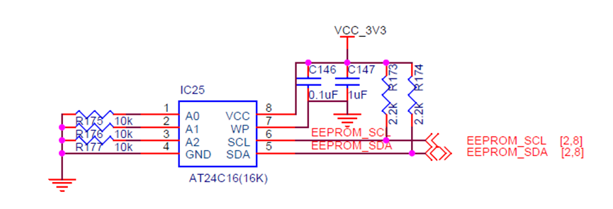
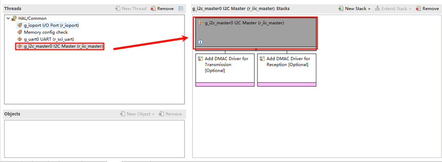
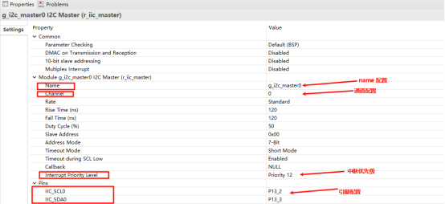
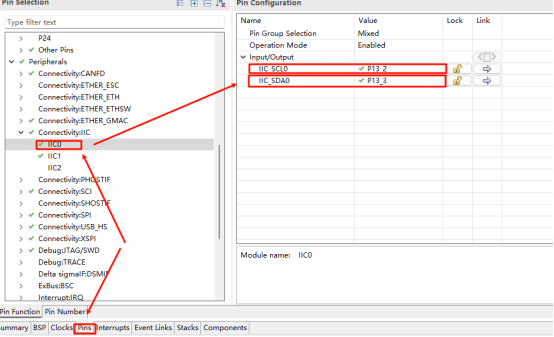
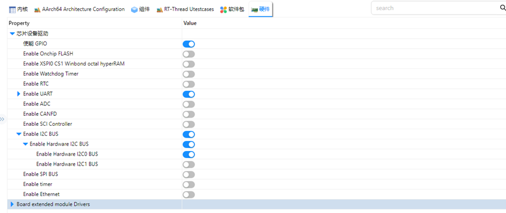
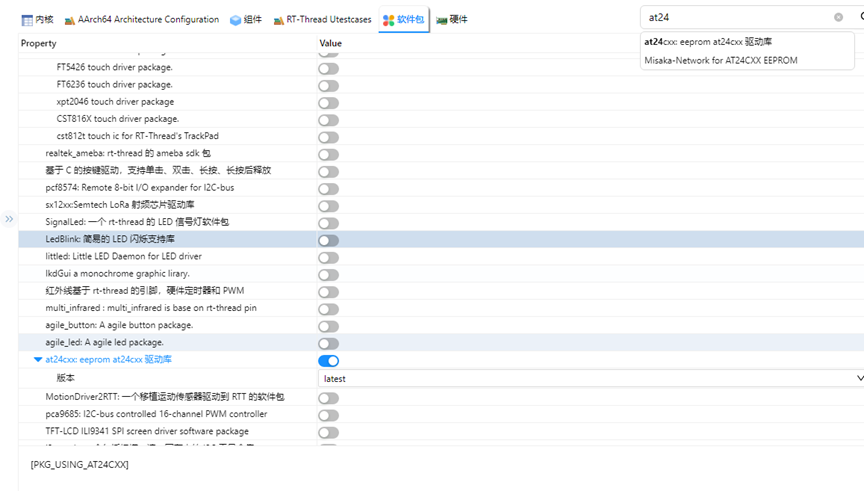
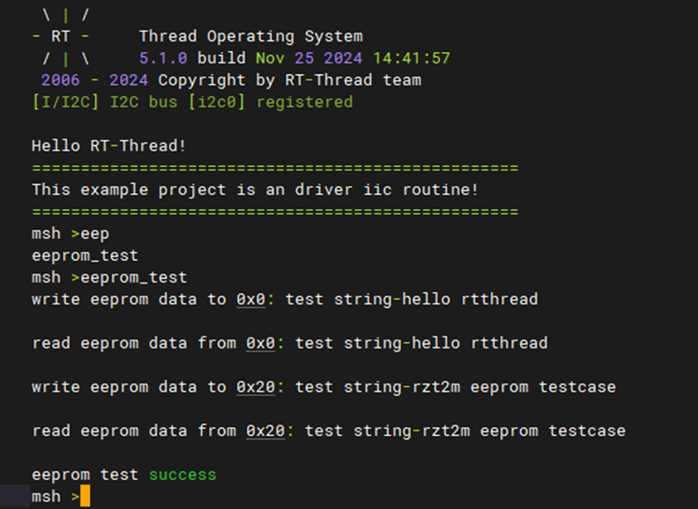

IIC EEPROM Driver Usage Instructions
English | 中文
Introduction
This example demonstrates how to use the RT-Thread I2C framework on the EtherKit to perform read and write operations on the onboard EEPROM.
Hardware Description
The EEPROM used on the EtherKit is an AT24C16, which is connected to the I2C0 of the R9A07G084M08GBG chip.

FSP Configuration Instructions
Create a new stack and select r_iic_master. Then, configure the I2C0 settings as shown below:


RT-Thread Settings Configuration
Enable the RT-Thread I2C driver framework and the AT24C16 driver software package in the configuration.


Example Project Description
The example uses the AT24C16 driver package to perform read and write operations at EEPROM addresses 0x00 and 0x20.
#ifdef PKG_USING_AT24CXX
#include "at24cxx.h"
#define EEPROM_I2C_NAME "i2c0"
static at24cxx_device_t at24c02_dev;
static void eeprom_test(void)
{
char str1[] = "test string-hello rtthread\n";
char str2[] = "test string-rzt2m eeprom testcase\n";
uint8_t read_buffer1[50];
uint8_t read_buffer2[50];
at24c02_dev = at24cxx_init(EEPROM_I2C_NAME, 0x0);
if (at24c02_dev == RT_NULL)
{
rt_kprintf("eeprom init failed\n");
return;
}
rt_memset(read_buffer1, 0x0, sizeof(read_buffer1));
rt_memset(read_buffer2, 0x0, sizeof(read_buffer2));
at24cxx_write(at24c02_dev, 0x0, (uint8_t *)str1, (sizeof(str1) - 1));
rt_kprintf("write eeprom data to 0x0: %s\n", str1);
rt_thread_mdelay(1000);
at24cxx_read(at24c02_dev, 0x0, read_buffer1, (sizeof(str1) - 1));
rt_kprintf("read eeprom data from 0x0: %s\n", read_buffer1);
at24cxx_write(at24c02_dev, 0x20, (uint8_t *)str2, (sizeof(str2) - 1));
rt_kprintf("write eeprom data to 0x20: %s\n", str2);
rt_thread_mdelay(1000);
at24cxx_read(at24c02_dev, 0x20, read_buffer2, (sizeof(str2) - 1));
rt_kprintf("read eeprom data from 0x20: %s\n", read_buffer2);
if (rt_strcmp((const char *)str1, (const char *)read_buffer1) != 0 && rt_strcmp((const char *)str2, (const char *)read_buffer2) != 0)
rt_kprintf("eeprom test fail\n");
else
rt_kprintf("eeprom test success\n");
at24cxx_deinit(at24c02_dev);
}
MSH_CMD_EXPORT(eeprom_test, eeprom test sample);
#endif
Compilation & Download
RT-Thread Studio: In RT-Thread Studio’s package manager, download the EtherKit resource package, create a new project, and compile it.
IAR: First, double-click
mklinks.batto create symbolic links between RT-Thread and the libraries folder. Then, use theEnvtool to generate the IAR project. Finally, double-clickproject.ewwto open the IAR project and compile it.
After compilation, connect the development board’s JLink interface to the PC and download the firmware to the development board.
Run Effect
To test the EEPROM, enter the eeprom_test command in the serial terminal:
